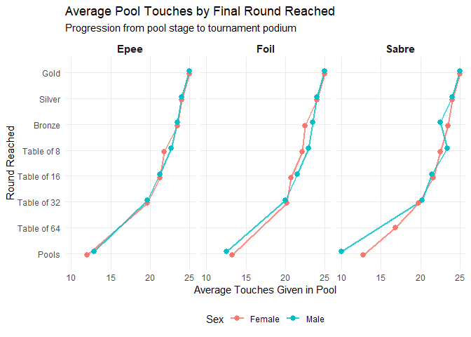
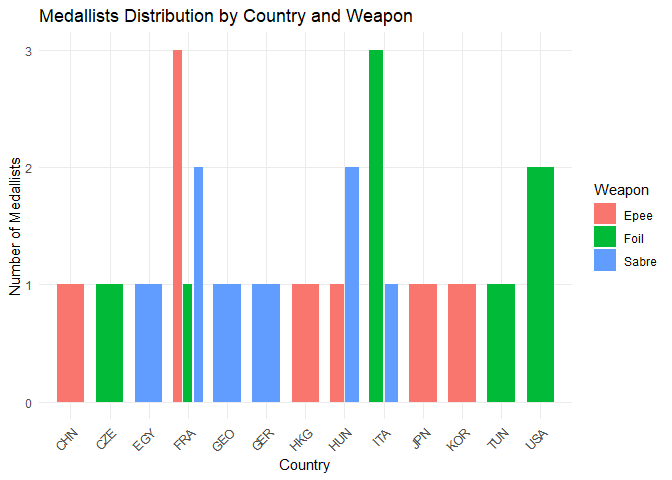

fencingR
fencingR provides a tidyverse-native framework for processing, analyzing, and visualizing competitive fencing tournament data. From pool stage efficiency metrics to direct elimination seeding gradients and national delegation benchmarking, the package streamlines quantitative performance analysis across all three weapons (Epee, Foil, and Sabre).Installation
Example Installation
You can install the development version of fencingR from GitHub with:
# install.packages("pak")
pak::pak("paulinaguers/fencingR")Built-in Dataset:
The package includes fencing_wc2026, a curated dataset of 151 athlete records from a World Championship scenario, capturing pool phase volume, win rates, and final tournament progression.
library(fencingR)
#to give it a look
utils::head(fencing_wc2026, 5)
#> fencer country sex weapon passed_pool touches_given
#> 1 Larissa Eifler GER Female sabre yes 25
#> 2 Sara Balzer FRA Female sabre yes 24
#> 3 Toscane Tori FRA Female sabre yes 23
#> 4 Sugar Katinka Battai HUN Female sabre yes 24
#> 5 Sarah Noutcha FRA Female sabre yes 22
#> touches_received pool_index pool_win_rate round_reached
#> 1 12 13 0.83 Gold
#> 2 15 9 0.67 Silver
#> 3 16 7 0.67 Bronze
#> 4 14 10 0.83 Bronze
#> 5 17 5 0.67 Table of 8touches_given&touches_received: Offensive and defensive touch volumes during the pool stage.pool_index: Net touch indicator ().pool_win_rate: Proportion of pool bouts won.round_reached: Final tournament stage achieved (PoolsthroughGold).
Quick Workflow
1. National Delegation Benchmarking
Evaluate depth and average pool efficiency across countries while filtering out small sample sizes (min_fencers = 12 by default):
country_pool_index(fencing_wc2026, min_fencers = 12)
#> # A tibble: 4 × 2
#> country average_pool_win_rate
#> <chr> <dbl>
#> 1 FRA 0.631
#> 2 ITA 0.599
#> 3 USA 0.591
#> 4 KOR 0.5792. Pool Efficiency vs. Tournament Progression
Analyze how offensive output during pools translates into direct elimination seeding and podium finishes across weapons and sexes:
touchesgiven_effect(fencing_wc2026)
3. Podium Extraction & Distribution
Isolate medalists (Gold, Silver, Bronze) and visualize medal counts by national federation and weapon:
podium <- get_medallists(fencing_wc2026)
utils::head(podium, 6)
#> # A tibble: 6 × 5
#> # Groups: weapon, sex [2]
#> fencer country sex weapon round_reached
#> <chr> <chr> <chr> <chr> <chr>
#> 1 Larissa Eifler GER Female sabre Gold
#> 2 Sara Balzer FRA Female sabre Silver
#> 3 Toscane Tori FRA Female sabre Bronze
#> 4 Sugar Katinka Battai HUN Female sabre Bronze
#> 5 Martina Favaretto ITA Female foil Gold
#> 6 Alice Volpi ITA Female foil Silver
plot_medallists_by_country(fencing_wc2026)
Learn More
For a comprehensive walkthrough of the analytical methodology and all package functions, read the introductory vignette:
vignette("Introduction to fencingR", package = "fencingR")